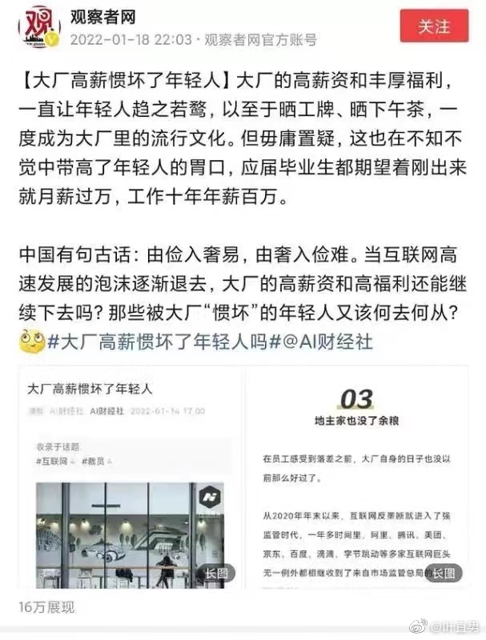

Omicron出现之后，似乎美国专家主流预测中长期很乐观，认为2022年春天抗疫将会迎来非常好的形势。不过说实话，专家已经乐观好多次被打脸了。从第一波之后得病人数很多后群体免疫，到疫苗接种后群体免疫，到认为Delta过后基本是Delta下面继续变异的竞争。几乎没有专家预测到了Omicron的出现。
中国正式步入汇率换算与美国比较工资待遇的时代不过我提醒视野应该放广一点，不要光和美国比较，考虑一下欧洲和英国才对。//@宝玉xp://@稻草人的迷失:我觉得问题不在于互联网的高薪，而在于一般制造业的低薪问题，导致一般制造业无人啊。@叶直男:观察者网大概不知道，我同年级的同学，在美帝念了top30的研究生，现在Google给的薪资已经轻松可以到三四十万美金以上了。而他的技术并不一定见得胜过我，做的事情或者产品也不一定见得不如他，并且没有我们这边的996(晚9点下班是非常温柔的时刻)，也没有被摆上明面的的末尾淘汰制，更没有高度紧绷的35岁失业神经。说难听点，高铁抢票、城市智慧大脑、健康码，所有这些基础掌上民生应用，超过美国的互联网便利程度，正是吃了廉价IT工程师的红利，结果反倒过来打一耙。